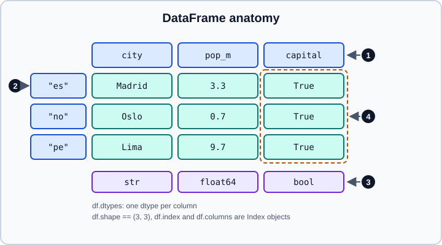

DataFrame
|
This content was generated with the assistance of AI and should be verified against the official documentation before being relied on in production. |
A DataFrame is a two-dimensional table of labelled columns that may have different dtypes. It can be seen as a dict of
Series that share one row index, and it is the object most pandas code works with:
read_csv returns one, groupby and merge consume and produce them, and scikit-learn accepts them directly.
This page targets pandas 3.1 (3.1.0 was released on 22 October 2026) on Python 3.13 or 3.14; pandas 3.1 supports
Python 3.11 and requires NumPy 2.0.2 or later. Every example was run on pandas 3.1.0, NumPy 2.5.4 and Python 3.13, and
the output shown is real. Examples assume import numpy as np and import pandas as pd. Related pages:
Series, Index Objects,
Essential Basic Functionality,
Indexing & Selecting and
Copy-on-Write.
Anatomy of a DataFrame

The numbered markers in the figure are:
-
The column labels form an
Index(df.columns). -
The row labels form another
Index(df.index); by default aRangeIndexof integers starting at 0. -
Each column stores one dtype (
df.dtypes). Different columns can differ. -
A single column, such as
df["capital"], is aSeriesthat shares the row index.
import numpy as np
import pandas as pd
df = pd.DataFrame(
{"city": ["Madrid", "Oslo", "Lima"], "pop_m": [3.3, 0.7, 9.7], "capital": [True, True, True]},
index=["es", "no", "pe"],
)
print(df)
print(df.dtypes)
print(df.shape, df.columns, df.index, sep="\n")
df.info() city pop_m capital
es Madrid 3.3 True
no Oslo 0.7 True
pe Lima 9.7 True
city str
pop_m float64
capital bool
dtype: object
(3, 3)
Index(['city', 'pop_m', 'capital'], dtype='str')
Index(['es', 'no', 'pe'], dtype='str')
<class 'pandas.DataFrame'>
Index: 3 entries, es to pe
Data columns (total 3 columns):
# Column Non-Null Count Dtype
--- ------ -------------- -----
0 city 3 non-null str
1 pop_m 3 non-null float64
2 capital 3 non-null bool
dtypes: bool(1), float64(1), str(1)
memory usage: 95.0 bytesTwo details differ from older tutorials: the string column is str (not object), and the class lives at
pandas.DataFrame (the repr used to show pandas.core.frame.DataFrame).
Creating a DataFrame
The constructor is pd.DataFrame(data=None, index=None, columns=None, dtype=None, copy=None).
From a dict of columns
The most common form. Keys become column labels; values are lists, arrays or Series. A scalar is broadcast to the length of the other columns.
print(pd.DataFrame({"a": [1, 2], "b": 5}))
print(pd.DataFrame({"a": pd.Series([1, 2], index=["x", "y"]), "b": pd.Series([3], index=["y"])})) a b
0 1 5
1 2 5
a b
x 1 NaN
y 2 3.0Source: pandas.DataFrame
When the values are Series, the DataFrame is built on the union of their indexes and each column is aligned on it;
missing positions become NaN. Lists of different length raise
ValueError: All arrays must be of the same length, and an all-scalar dict raises
ValueError: If using all scalar values, you must pass an index (pass index=[0]).
From a list of lists, a list of dicts or an array
print(pd.DataFrame([[1, "a"], [2, "b"]], columns=["n", "c"]))
print(pd.DataFrame([{"a": 1, "b": 2}, {"a": 3, "c": 4}]))
print(pd.DataFrame(np.arange(6).reshape(2, 3), columns=list("xyz"))) n c
0 1 a
1 2 b
a b c
0 1 2.0 NaN
1 3 NaN 4.0
x y z
0 0 1 2
1 3 4 5Source: pandas.DataFrame
A list of dicts is the natural shape of JSON records: the columns are the union of the keys, and a missing key becomes
NaN (which makes the integer column b become float64). A 2-D array needs columns= to get meaningful names, and
all its columns share the array dtype.
Like Series, the DataFrame constructor copies a NumPy array by default since pandas 3.0; pass copy=False to
share memory. After d = pd.DataFrame(arr), writing arr[0, 0] = 99 does not change d.
from_dict and from_records
print(pd.DataFrame.from_dict({"r1": {"a": 1, "b": 2}, "r2": {"a": 3, "b": 4}}, orient="index"))
print(pd.DataFrame.from_records([(1, "a"), (2, "b")], columns=["n", "c"])) a b
r1 1 2
r2 3 4
n c
0 1 a
1 2 bfrom_dict accepts orient="columns" (the default, same as the constructor), "index" (outer keys become row labels) or
"tight". from_records takes tuples, a structured array or a list of dicts; it is the usual bridge from database
cursors and from NumPy structured arrays (see Structured Arrays).
Empty frames
pd.DataFrame(columns=["a", "b"]) has shape (0, 2) and object columns. Growing a DataFrame row by row is
slow (every step copies); collect the rows in a list and build the frame once:
rows = []
for i in range(3):
rows.append({"i": i, "sq": i * i})
frame = pd.DataFrame(rows)DataFrame.append was removed in pandas 2.0, so the old pattern df = df.append(row) does not work; use pd.concat
once with a list of frames (see Concatenation).
Working with columns
Getting columns
print(type(df["city"]), type(df[["city"]]), df.city.tolist())<class 'pandas.Series'> <class 'pandas.DataFrame'> ['Madrid', 'Oslo', 'Lima']df["city"] returns a Series; df[["city"]] (a list) returns a one-column DataFrame. Attribute access df.city
works for names that are valid Python identifiers and do not collide with a DataFrame attribute, but it is fragile:
x = pd.DataFrame({"count": [1, 2], "a b": [3, 4]})
print(x.count().tolist(), x["count"].tolist()) # [2, 2] [1, 2] (x.count is the METHOD)
x.count = 5 # creates a plain attribute, does not touch the column
print(x["count"].tolist(), x.count) # [1, 2] 5Source: pandas.DataFrame.count
Use brackets in code that must be correct: df["count"]. Attribute access never works for assignment of a new column,
and df.a b is impossible.
Adding, replacing and removing columns
d = df.copy()
d["density"] = d["pop_m"] * 10 # new column, aligned on the index
d["tier"] = np.where(d["pop_m"] > 1, "big", "small") # vectorised conditional
d = d.assign(pop_k=lambda x: x["pop_m"] * 1000) # returns a new frame, chainable
d.insert(1, "code", ["ES", "NO", "PE"]) # insert at a position, in place
print(d)
print(d.pop("tier")) # remove and return a column
del d["density"]
print(d.columns.tolist()) city code pop_m capital density tier pop_k
es Madrid ES 3.3 True 33.0 big 3300.0
no Oslo NO 0.7 True 7.0 small 700.0
pe Lima PE 9.7 True 97.0 big 9700.0
es big
no small
pe big
Name: tier, dtype: str
['city', 'code', 'pop_m', 'capital', 'pop_k']| Operation | Behaviour |
|---|---|
|
adds or replaces a column in place; a Series right-hand side is aligned on the index |
|
returns a new DataFrame; keyword values can be callables that receive the frame (ideal in method chains) |
|
adds at a position; raises |
|
remove a column ( |
|
returns a new frame without the columns; raises |
|
returns a new frame with relabelled columns ( |
|
replaces all column labels at once; the length must match |
Assigning a Series aligns it on the row index, exactly like arithmetic:
f = pd.DataFrame({"a": [1, 2, 3]}, index=list("xyz"))
print(f.assign(b=pd.Series([10, 20], index=["z", "x"]))) a b
x 1 20.0
y 2 NaN
z 3 10.0Passing a list or array is positional instead, and its length must equal the number of rows.
Selecting rows and columns
| Expression | Result |
|---|---|
|
column(s) by label |
|
rows where the mask is True |
|
rows by position (a slice in |
|
labels, slices (inclusive), masks, callables |
|
integer positions (slices exclusive) |
|
one scalar by label or by position |
|
rows by an expression string |
|
pandas 3.x expression helpers, see pd.col, select & filter |
print(df.loc["es"]) # a row as a Series; dtype object because the columns differ
print(df.loc[["es", "pe"], ["city", "pop_m"]]) # rows and columns by label
print(df.iloc[0:2, 0:2]) # positions, end exclusive
print(df[df["pop_m"] > 1]) # boolean mask
print(df["es":"no"]) # a label slice in [] selects ROWS, inclusive
print(df.at["es", "city"], df.iat[0, 1])city Madrid
pop_m 3.3
capital True
Name: es, dtype: object
city pop_m
es Madrid 3.3
pe Lima 9.7
city pop_m
es Madrid 3.3
no Oslo 0.7
city pop_m capital
es Madrid 3.3 True
pe Lima 9.7 True
city pop_m capital
es Madrid 3.3 True
no Oslo 0.7 True
Madrid 3.3Rules of thumb: [] with a string or list selects columns, with a slice or boolean mask selects rows. Anything
more complex should go through .loc or .iloc, covered in depth on
Indexing & Selecting.
df.query is convenient for readable filters and for references to local variables with @:
threshold = 1
print(df.query("pop_m > @threshold"))The @ prefix, backtick-quoted column names (for labels with spaces) and engine="numexpr" are described on the
user-guide page. query and eval only pay off on large frames with several operations (around 100,000 rows or more).
Arithmetic aligns on both axes
Binary operations between two DataFrames align rows and columns first, then operate cell by cell. Positions that exist
in only one operand are NaN.
p = pd.DataFrame({"a": [1, 2], "b": [3, 4]}, index=["x", "y"])
q = pd.DataFrame({"b": [10, 20], "c": [1, 1]}, index=["y", "z"])
print(p + q)
print(p.add(q, fill_value=0)) a b c
x NaN NaN NaN
y NaN 14.0 NaN
z NaN NaN NaN
a b c
x 1.0 3.0 NaN
y 2.0 14.0 1.0
z NaN 20.0 1.0Only cell ("y", "b") exists in both, hence 14.0. With fill_value=0 a cell missing on one side counts as 0, and a cell
missing on both sides stays NaN (for example ("x", "c"): row x exists only in p and column c only in q).
A DataFrame combined with a Series aligns the Series index to the columns by default. To align it to the rows, use the
method form with axis:
print(p - p.iloc[0]) # row 0 subtracted from every row (Series aligned on columns)
print(p.sub(p["a"], axis=0)) # column a subtracted from every column (aligned on rows)
print(p.T @ p) # matrix product: the labels must match: a, b with a, b a b
x 0 0
y 1 1
a b
x 0 2
y 0 2
a b
a 5 11
b 11 25Comparison operators between two DataFrames require identical labels (ValueError: Can only compare identically-labeled
DataFrame objects); call df.equals(other) for a whole-frame check.
Transposing and dtypes
df.T swaps rows and columns. Because a DataFrame stores one dtype per column, transposing mixed columns produces
object columns; transposing a frame that has a single numeric dtype keeps it.
print(df.T)
print(df.T.dtypes.tolist()) # [dtype('O'), dtype('O'), dtype('O')] es no pe
city Madrid Oslo Lima
pop_m 3.3 0.7 9.7
capital True True True
[dtype('O'), dtype('O'), dtype('O')]Source: pandas.DataFrame.T
The same loss happens whenever a row is extracted from a frame of mixed dtypes (df.loc["es"] above is object) and
when iterrows yields rows. Prefer column-wise operations.
Converting to other structures
print(df[["pop_m"]].to_numpy().dtype, df.to_numpy().dtype) # float64 object
print(df.select_dtypes("number").to_numpy().dtype) # float64
print(df.to_dict(orient="records"))
print(df.to_dict(orient="list"))
print(df.reset_index().to_dict("split")["columns"])float64 object
float64
[{'city': 'Madrid', 'pop_m': 3.3, 'capital': True}, {'city': 'Oslo', 'pop_m': 0.7, 'capital': True}, {'city': 'Lima', 'pop_m': 9.7, 'capital': True}]
{'city': ['Madrid', 'Oslo', 'Lima'], 'pop_m': [3.3, 0.7, 9.7], 'capital': [True, True, True]}
['index', 'city', 'pop_m', 'capital']-
to_numpy()finds a common dtype for the whole frame (objectwhen numbers and strings are mixed). For a frame whose columns share one dtype it can return a read-only view; ask forcopy=Trueto modify it. A mixed frame returns a fresh writable array. -
to_dictsupportsorientvalues"dict"(default),"list","series","split","tight","records"and"index"."records"is the form accepted by JSON APIs. -
to_records()returns a NumPy record array with the index as the first field;to_records(index=False)drops it. -
to_csv,to_parquet,to_excel,to_sql,to_jsonand friends are covered on the I/O pages, starting with CSV & Text Files.
Copy-on-Write and chained assignment
Since pandas 3.0 every DataFrame or Series derived from another one behaves as an independent object. Writing to a
subset never changes the parent, and the old SettingWithCopyWarning no longer exists.
a = pd.DataFrame({"v": [1, 2, 3]})
b = a[["v"]]
b.iloc[0] = 100
print(a["v"].tolist(), b["v"].tolist()) # [1, 2, 3] [100, 2, 3]The consequence for assignments is that chained assignment never works. a["v"][a["v"] > 1] = 0 first creates a
temporary Series (a["v"]), assigns into the temporary and throws it away. pandas 3 reports this with a
ChainedAssignmentError, which is a warning (not an exception) and leaves the data unchanged. The fix is a single
.loc call:
a["v"][a["v"] > 1] = 0 # ChainedAssignmentError warning, a is unchanged: [1, 2, 3]
a.loc[a["v"] > 1, "v"] = 0 # a single assignment: [1, 0, 0]
print(a["v"].tolist()) # [1, 0, 0]Related rules:
-
No silent upcasting (PDEP-6):
a.loc[0, "v"] = 1.5on anint64column raisesTypeError: Invalid value '1.5' for dtype 'int64'. Cast the column first withastype. -
inplace=Trueis deprecated in pandas 3.1 ondrop,rename,reset_index,set_index,dropna,drop_duplicates,sort_values,sort_index,evalandquery. It warns (Pandas4Warning, referencing PDEP-8) and will be removed; reassign instead:df = df.drop(columns="x"). In-place was never faster because most implementations copied anyway. -
Method chaining is now the idiomatic way to build up a result: each step returns a new object.
Iteration
Iterating over a DataFrame directly yields the column labels, like a dict.
for col in df: # ['city', 'pop_m', 'capital']
print(col, end=" ")
print()
for col, ser in df.items(): # column label and Series pairs
print(col, ser.dtype)
for t in df.itertuples(): # named tuples, fast
print(t)
for t in df.itertuples(index=False, name=None): # plain tuples, fastest
print(t)city pop_m capital
city str
pop_m float64
capital bool
Pandas(Index='es', city='Madrid', pop_m=3.3, capital=True)
Pandas(Index='no', city='Oslo', pop_m=0.7, capital=True)
Pandas(Index='pe', city='Lima', pop_m=9.7, capital=True)
('Madrid', 3.3, True)
('Oslo', 0.7, True)
('Lima', 9.7, True)iterrows() builds a Series per row and therefore upcasts the row to a common dtype (object here); avoid it unless
you need the labels. In almost every case a vectorised expression, map, apply or groupby is shorter and orders of
magnitude faster; see Enhancing Performance. Modifying a frame while
iterating over it is not supported and, under Copy-on-Write, never affects the object being iterated.
Inspecting and summarising
print(df.describe())
print(df.describe(include="all"))
print(df.empty, len(df), df.size, df.ndim)
print(df.nunique().to_dict(), df.isna().sum().to_dict())
print(df.sort_values("pop_m", ascending=False)) pop_m
count 3.000000
mean 4.566667
std 4.631774
min 0.700000
25% 2.000000
50% 3.300000
75% 6.500000
max 9.700000
city pop_m capital
count 3 3.000000 3
unique 3 NaN 1
top Madrid NaN True
freq 1 NaN 3
mean NaN 4.566667 NaN
std NaN 4.631774 NaN
min NaN 0.700000 NaN
25% NaN 2.000000 NaN
50% NaN 3.300000 NaN
75% NaN 6.500000 NaN
max NaN 9.700000 NaN
False 3 9 2
{'city': 3, 'pop_m': 3, 'capital': 1} {'city': 0, 'pop_m': 0, 'capital': 0}
city pop_m capital
pe Lima 9.7 True
es Madrid 3.3 True
no Oslo 0.7 Truedescribe() summarises numeric columns only; include="all" also summarises non-numeric ones. df.info() shows non-null
counts and dtypes; add memory_usage="deep" for the real size of string data, or use df.memory_usage(deep=True).
len(df) is the number of rows, df.size rows times columns, df.shape[1] the number of columns.
Pitfalls
-
Mixed dtypes in rows.
df.loc["es"],df.Tanditerrowsproduceobject. Work column by column. -
df[...]is overloaded. A string selects a column, a slice selects rows by position, a list selects columns, a boolean mask selects rows. Reach for.loc/.ilocwhen you need to be explicit. -
Alignment on assignment and arithmetic. An index mismatch yields
NaNinstead of an error. Checkdf.index.equals(other.index)when you expect identical labels. -
Column names that are not identifiers or that clash with methods (
count,pop,T,size) cannot be used with attribute access. -
A subset is a copy. Under Copy-on-Write you cannot update the parent through
sub = df[mask]. Assign through.locon the parent. -
Empty frames have
objectcolumns, so summing them gives surprising dtypes. Providedtype=when you create them:pd.DataFrame({"a": pd.Series(dtype="int64")}). -
DataFrame.sum()on mixed columns concatenates strings and adds numbers:pd.DataFrame({"a": [1, 2], "c": ["x", "y"]}).sum()returns{'a': 3, 'c': 'xy'}. Passnumeric_only=Trueto restrict the reduction to numbers.
Outdated statements in older books and tutorials
| Older text says | In pandas 3.1 | Changed |
|---|---|---|
|
removed; collect rows and build a frame, or |
2.0 (April 2023) |
|
removed; use |
1.0 (January 2020), 2.0 for |
|
removed; use |
2.0 |
|
removed; use |
3.0 |
|
removed |
2.0 |
|
removed (use label slicing or |
3.0 |
|
removed with Copy-on-Write; use |
3.0 |
|
deprecated; reassign |
3.1 |
|
the dtype is |
3.0 |
|
prefer |
3.0 |
References
-
pandas user guide, intro to data structures (DataFrame): https://pandas.pydata.org/docs/user_guide/dsintro.html
-
pandas.DataFrameAPI reference: https://pandas.pydata.org/docs/reference/api/pandas.DataFrame.html -
pandas API reference, DataFrame: https://pandas.pydata.org/docs/reference/frame.html
-
pandas user guide, indexing and selecting data: https://pandas.pydata.org/docs/user_guide/indexing.html
-
pandas user guide, essential basic functionality: https://pandas.pydata.org/docs/user_guide/basics.html
-
pandas user guide, migrating to pandas 3 (Copy-on-Write, chained assignment, the str dtype): https://pandas.pydata.org/docs/user_guide/migration.html
-
pandas release notes 3.0.0 and 3.1.0: https://pandas.pydata.org/docs/whatsnew/v3.0.0.html and https://pandas.pydata.org/docs/whatsnew/v3.1.0.html
-
PDEP-6, ban upcasting in setitem-like operations: https://pandas.pydata.org/pdeps/0006-ban-upcasting.html
-
PDEP-8, inplace methods in pandas: https://pandas.pydata.org/pdeps/0008-inplace-methods-in-pandas.html